Extract Class refactoring
Extract Class replaces a set of fields with a new container object. All references to the fields are updated to access the new container object. This refactoring helps to group fields which logically belong together.
The following example demonstrates how to extract the fields x,y,z to a new class Position:
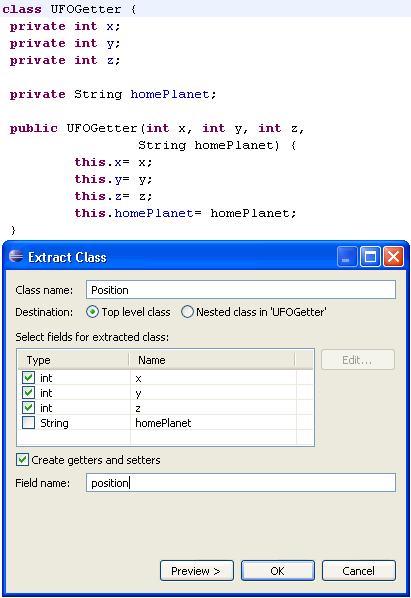
The refactoring results in the creation of a new Position class which
is used in the original class:
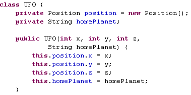
To execute the Extract Class refactoring, select a type and invoke Refactor > Extract Class.
New Clean Ups
The following Clean Ups have been implemented:
- Correct indentation: Corrects the indentation of your source code.
- Add unimplemented methods: Adds code stubs for all unimplemented methods.
Add unimplemented methods is most useful after adding a new method to an interface. Correct indentation is also available as save action.
To clean up your code select a set of Java elements and invoke Source > Clean Up.
Refactoring flags references in binaries
The Rename Type refactoring now flags references to the refactored type inside compiled class files. Such references cannot be updated and would lead to problems at run time.
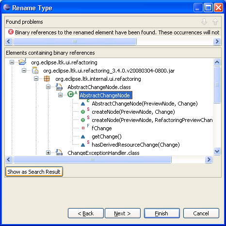
Undo format
Formatting a set of Java elements, e.g. via Package Explorer, can now be undone using Edit > Undo Format (Ctrl+Z).
Java Editor Breadcrumb
The Java editor now offers a breadcrumb which shows the path to the element at the cursor position. The breadcrumb can be enabled via the Toggle Breadcrumb tool bar button or by pressing Alt+Shift+B:

Each element in the breadcrumb can be selected and actions can be invoked through a context menu or keyboard short cuts.
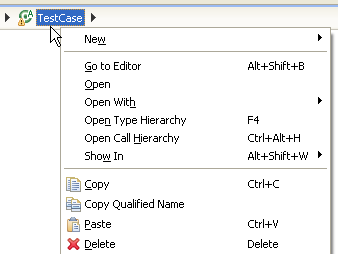
Furthermore the breadcrumb let you navigate to other elements via drop-downs.
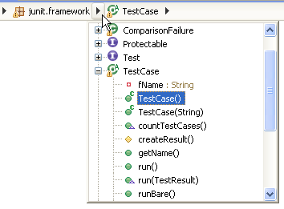
Rich Javadoc Hover
To navigate Javadoc in the Javadoc hover the hover now offers several actions:
- Links to follow links in Javadoc.
- Actions to go forward and backward in the navigation history.
- Action to show the current content in the Javadoc view.
- Action to open the declaration of the current element.
- Action to open the current content in an external browser.
- A handle to resize the hover.
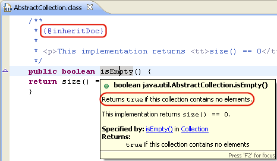
The hover also shows the icon corresponding to the current Java element
To enrich a hover either press F2 or move the mouse into the hover.
You can configure how to enrich the hover on the
 General > Editors > Text Editors preference page.
General > Editors > Text Editors preference page.
Rich Java problem hover
The problem hover now offers all available quick fixes for a problem and shows a tool bar on F2 or when you move the mouse into it.
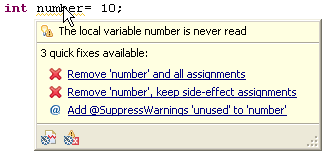
Quick fixes can be executed by clicking on the links. The actions in the tool bar let you configure the annotation preferences and the problem severity.
Content assist improvements
Content Assist (Ctrl+Space) as been improved in several areas. It can now handle syntax errors and missing types better then ever before.
- Content Assist can now use the type of the
instanceofcondition to offer more field and method access proposals.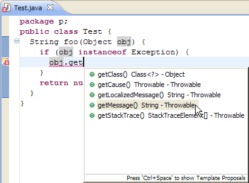
The required cast will be inserted when such a proposal is selected.
- Content Assist for static members also work even if the type has not been imported yet.
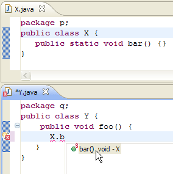
The required import will be added when such a proposal is selected.
- Content Assist can now propose methods with unknown types.
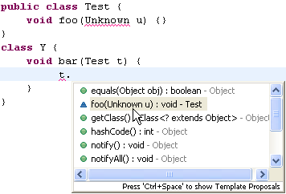
- Content Assist now shows the guessed arguments if it is set to automatically insert parameter names.
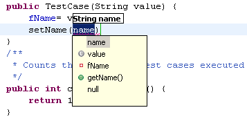
This can be configured on the
Java > Editor > Content Assist preference page.
Quick assists
New quick assists (Ctrl+1) have been added in this release. As always, quick assists don't show a dialog, but enter the linked mode where you can change names or types that have been introduced.
- Create getter and setters: available on fields.
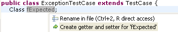
- Extract to method: available on expressions.
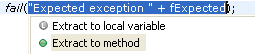
- Extract to local variable without replacing all occurrences: available on expressions.
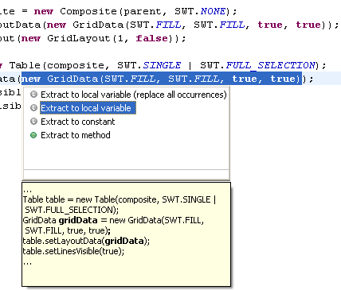
- Convert to StringBuffer: available on string concatenations.
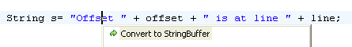
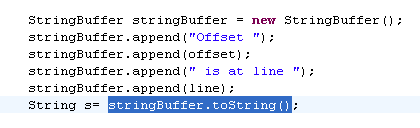
- Convert to MessageFormat: Similar to convert to
StringBuffer,MessageFormatis used to replace string concatenations.
SWT Templates
A set of templates have been added to provide code building blocks for SWT widgets.
To add, for example, an SWT button, type Button and press Ctrl+Space, select the Button SWT template, and press Enter.
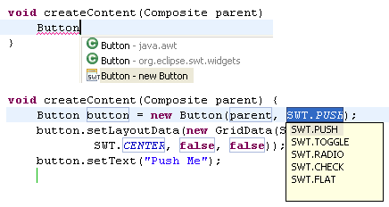
To see all available templates go to the
Java > Editor > Templates preference page or open the Templates view through Window > Show View > Other....
New Template Variables
New template variables have been added or existing variables have been improved. Consult the Template Variables help page for a detailed overview.
Specify location for templates
It is now possible to specify the location where Java editor templates are applicable.
- Statement location: The template shows up only when completing a statement.
- Type member location: The template shows up only when completing a type member.
As a result, Content Assist (Ctrl+Space) will only show templates applicable at the current location.
Format edited lines on save
A new save actions allows to format the edited lines on save. With this option enabled, format on save generates a minimal amount of changes, even on unformatted code.
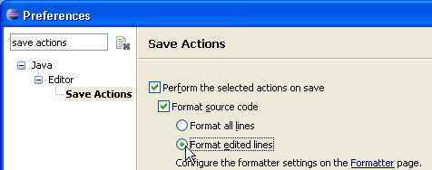
To enable this feature go to the
Java > Editor > Save Actions preference page and select Format edited lines.
Fix Project setup quick fix
If a type is used from a library or project which is not on the build path a new quick fix can now be used to add the missing container.
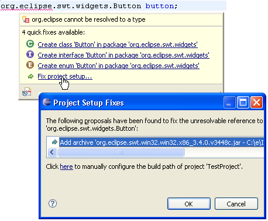
Please be aware, that the missing type can only be found if another project in the workspace does reference the type.
Highlighting numbers in Java code
The Java editor can now show numbers with their own custom color.
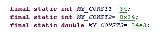
The color can be configured on the
Java > Editor > Syntax Coloring preference page.
Javadoc shows constant value
The Javadoc hover and the Javadoc view now shows the constant value of static fields.

Mark read and write occurrences
Mark Occurrences (Alt+Shift+O) now marks read and write accesses with different colors.
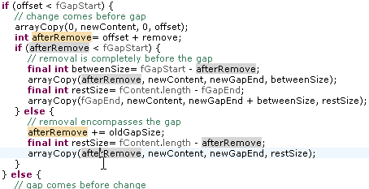Mark Occurrences can be enabled in the tool bar. Annotation colors are configured on the
General > Editors > Text Editors > Annotations preference page
Occurrences In File improvements
Several improvements have been added to Search > Occurrences In File:
- The quick menu (Ctrl+Shift+U) now only shows the searches
applicable for the current selection. If only one search kind is possible,
the shortcut will directly invoke the search.
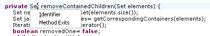
- The menu now offers all searches available by Mark Occurrences.
- Matches are now highlighted with different colors for read and write accesses in the search view.
- The search view offers a Link With Editor mode
where the view input is connected to the current editor selection.

Java compiler on multi-CPU machines
The Eclipse Compiler for Java is now taking advantage of the multi-threading capability of multi-CPU machines. Expect to see faster Java compile times when using machines with multiple CPUs.
Support for external class folders
Class folders located outside the workspace (external) can now be added to the build path.
To add an external class folder use the Java Build Path page of the project properties, select the Libraries tab and push the Add External Class Folder button.
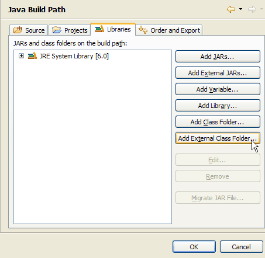
New and improved compiler diagnostics
Several improvements have been made to the problem detection in the compiler:
- Unnecessary declaration of thrown checked exception can now be ignored
if they are documented with an
@throwsor an@exceptiontag.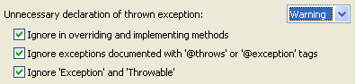
A Quick Fix (Ctrl+1) helps adding the Javadoc tag.
- Unnecessary declaration of thrown exception can now report
warnings for unchecked exceptions (e.g. subclasses of
java.lang.RuntimeExceptionandjava.lang.Error).A warning is issued if no such exception has been explicitly thrown in the code.
- Null pointer accesses are now reported as a warning by default.
- Unnecessary @SuppressWarnings annotations are now detected by the compiler.
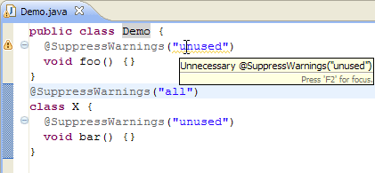
Note that
@SuppressWarnings("all")is still silencing the warning for unnecessary@SuppressWarnings, as it is the master switch to silence all warnings. - Redundant superinterfaces can now be detected by the compiler.
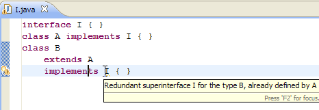
The unnecessary code can be removed by using Quick Fix (Ctrl+1).
You can configure this settings on the
Java > Compiler > Errors/Warnings preference page.
CLDC 1.1 class file compatibility
The Java compiler can now create CLDC 1.1 compatible class files.
You can set this on the
Java > Compiler preference page:
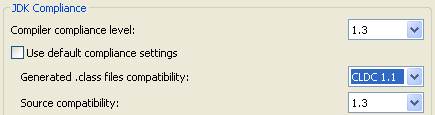
Flexible ZIP archive extensions
It is now possible to add ZIP archives to the build path with file
extensions other than .zip or .jar.
It is now, for example, possible to add a .rar file on the build path.
JUnit view shows execution time
The JUnit view now shows the elapsed time for test cases and test suites.
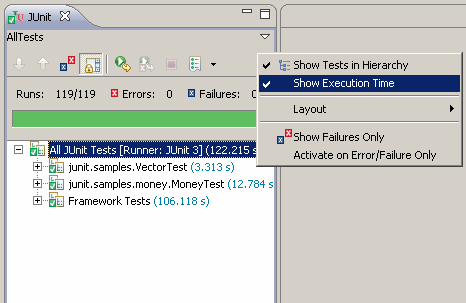
Improved Javadoc view
The Javadoc view has been improved with:
- Icon corresponding to the current input.
- Actions to go back and forth in the history.
- Action to enable and disable link with selection.
- Action to open the current input in an external browser.

Rearrange content of files per drag and drop
Unsorted views like the Outline view and the Members view in the Java browsing perspective can now be used to rearrange members by drag and drop.
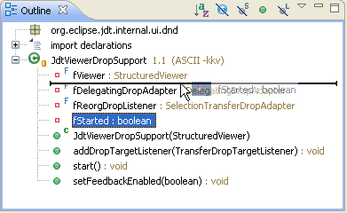
Call Hierarchy view works with more members
The Call Hierarchy view in caller mode now works with more kinds of elements:
- The children of a field are all members that access the field (read and write accesses)
- The children of a type or an instance initializer are all constructors of the type
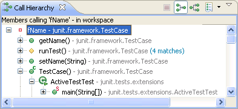
Runnable JAR export wizard
The Runnable JAR File Export wizard can create a JAR file based on a launch configuration. The generated JAR file contains all class files from the project including class files from required JARs and projects.
The generated JAR can be executed with the command:
java -jar generated_file.jar
or, on most operating systems, by double-clicking the file.
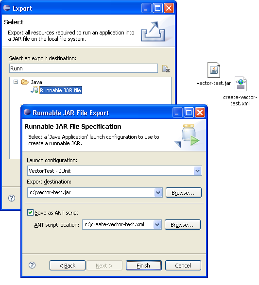
The export wizard can also create an ANT script which can be used to build the JAR.
Invoke File > Export... and then select the Java > Runnable JAR file wizard to create such a JAR file.
More Java search options
Type reference search can now be limited to specific match locations in the code. For example, you can find references in cast expressions, or in field and local variable types.
The following example shows how to search for all catch clauses in your code (search for references to '*' and limit to catch clauses):
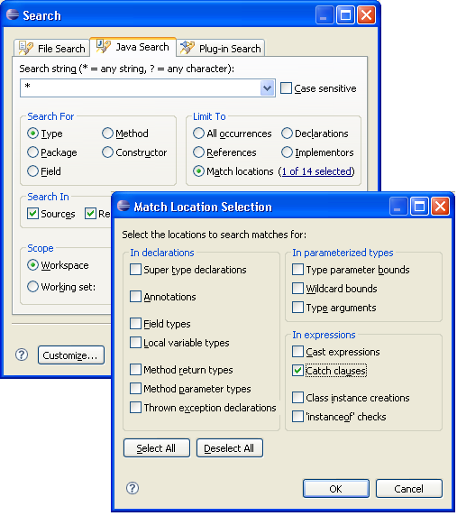
Paste creates snippet for members and statements
Paste (Ctrl+V) in the Package Explorer view now supports members and statements. Eclipse creates the required enclosing elements for you.
For example, pasting:
List<Number> numbers; numbers= Arrays.asList(1, 2, 42);
into _pasted_code_ generates a Java class and main method to hold the statements:
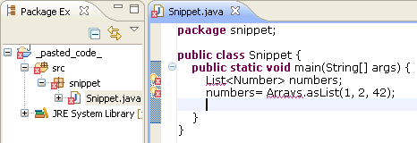Enhanced debug hover
When debugging, hovers for variables have been enhanced to display an object inspector. The inspector will display logical structures according to the toggle setting in the visible Variables or Expressions view.
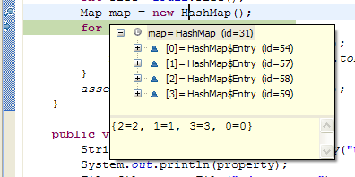
Execution environment description files
An execution environment description file describes a JVM and the environment it represents (see Execution Environment Descriptions for detailed information on the file format). The file defines JVM properties such as boot path, endorsed directories, language level, executables, source attachments, and so on.
You can now add JREs to your workspace using execution environment description files from the Installed JREs preference page. Press Add and select the Execution Environment Description JRE type.

On the following page specify an .ee file. This will create a JRE with attributes from the description file. This example shows J9 configured for Foundation 1.1.
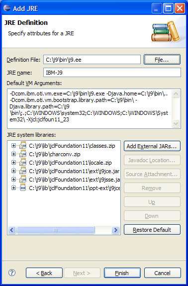
Search for installed JREs on Mac
Search results include launch configurations
Socket listening connector
Default watchpoint suspend settings
Add pages to the Javadoc export wizard
The new org.eclipse.jdt.ui.javadocExportWizardPage extension
point allows to add pages to the Javadoc export wizard.
Extender can for example add support for taglets.
One pass comment formatting
Comments can now be formatted at the same time as the Java code.
To do so combine the CodeFormatter#F_INCLUDE_COMMENTS flag
with the kind of formatting requested, e.g.:
CodeFormatter formatter = ...
formatter.format(CodeFormatter.K_COMPILATION_UNIT | CodeFormatter.F_INCLUDE_COMMENTS, ...);
Speed improvements of 20% to 30% have been noted.
Java 5 annotations supported by Java model
The Java Model now supports Java 5 annotations
as Java elements (IAnnotation).
Use getAnnotations() on
a package, a field, a method or a type to retrieve their corresponding
annotations. The fine-grained deltas reflect annotation additions,
removals, and changes.
Annotation formatting improvements
The Java source code formatter now provides fine-grained options for line breaks after annotations. It is possible to specify for each type of annotation if it should be followed by a line break:
- Annotations on members:
- Annotations on parameters:
- Annotations on local variables:
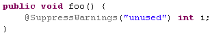
This can be configured on the
Java > Code Style > Formatter preference page.
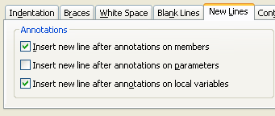
New API for invoking batch compiler
The Java batch compiler has two new API methods to allow standalone applications (e.g. running on a Foundation 1.0 JRE) to call it without involving the Eclipse platform:
BatchCompiler#compiler(String, PrintWriter, PrintWriter, CompilationProgress)BatchCompiler#compiler(String[], PrintWriter, PrintWriter, CompilationProgress).